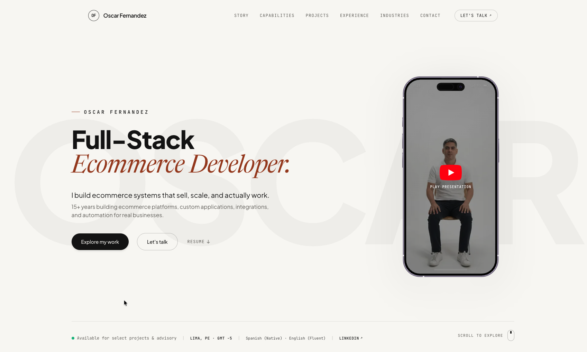
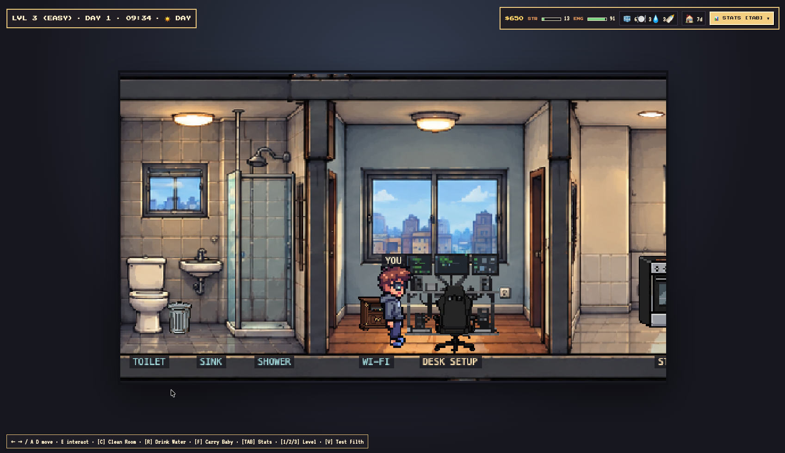

Oscar Fernandez
Senior Full-Stack Web Developer | WordPress & WooCommerce | PHP, API Integrations | Python & Retool | Remote
Senior Full-Stack Web Developer with 15+ years of experience building and improving web applications and e-commerce platforms. My core experience includes PHP, WordPress, WooCommerce, Shopify, API integrations, and production support. I have also built internal tools and automated operational workflows using Python, Retool, and Make.
Most recently, I worked remotely as a contractor for AT3 Tactical, supporting its WordPress/WooCommerce, Shopify, and BigCommerce properties. I have also led development teams and built products from the ground up, including an applicant tracking system and its API.
Based in Lima, Peru (UTC-5), I’m seeking remote opportunities in full-stack development, WordPress, e-commerce, or integrations.
My Portfolio
oskarvisual.github.io/my-portfolio ↗
My Games
oskarvisual.github.io/Remote-Life/ ↗